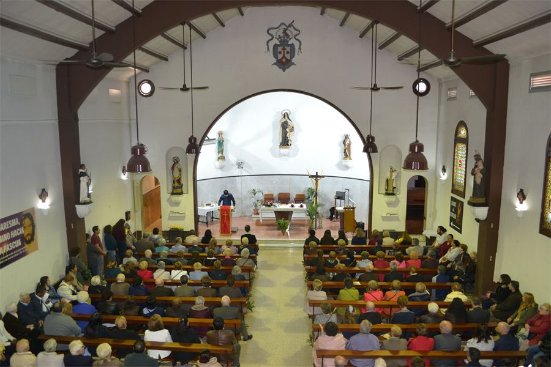
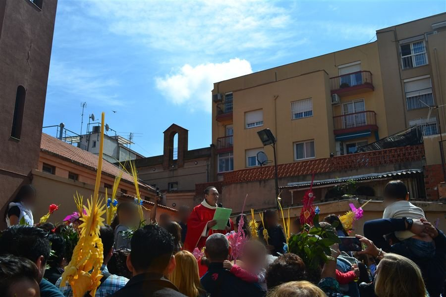
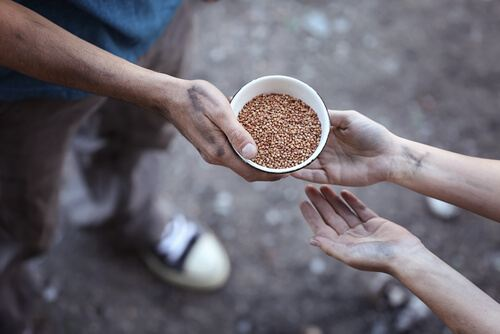
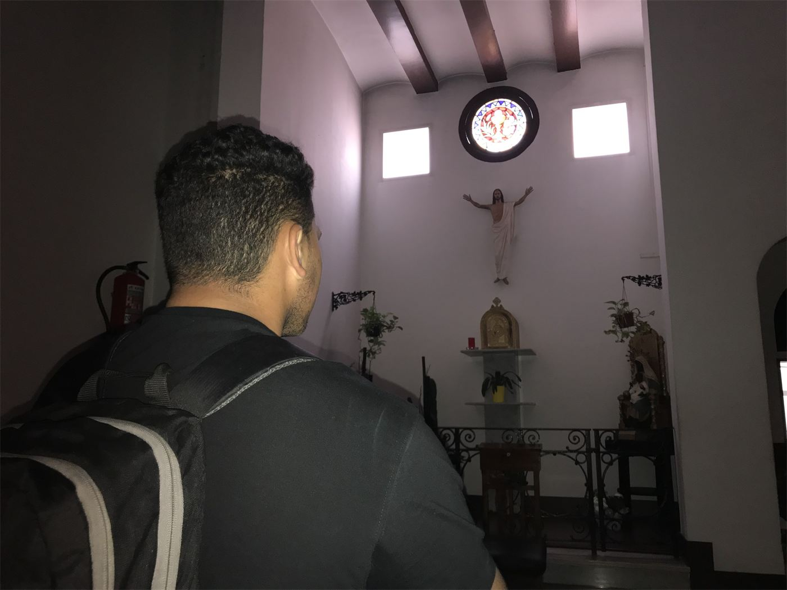
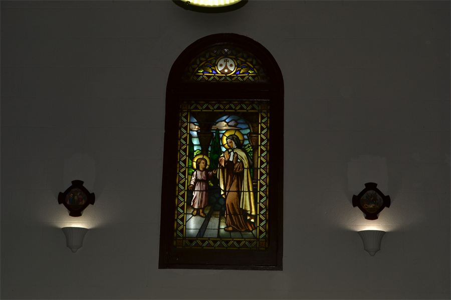

Santa Teresa
de Jesús
C/ Llobregós, 132 · 08032 Barcelona
Laborables
Eucaristía
Sábados
Eucaristía
Domingos
Eucaristía · 11:00 h con coro góspel
Confesiones
Sábados, y antes de cada misa

Una parroquia en el corazón del Carmel
La iglesia se construyó en 1924 en terrenos de la antigua finca de Can Grau, y desde un primer momento estuvo muy integrada en el barrio: fue sede de una de las primeras cooperativas obreras y de una escuela para niños y adultos.
Nada te turbe, nada te espante, todo se pasa, Dios no se muda; la paciencia todo lo alcanza; quien a Dios tiene nada le falta. Sólo Dios basta.Santa Teresa de Jesús
Vida parroquial
Grupos, celebraciones y servicios que dan vida a nuestra comunidad durante todo el año.

Misa con coro góspel
Todos los domingos (salvo en agosto) canta un amplio grupo de góspel en la misa de las 11:00.

Catequesis
Preparación para la primera comunión y la confirmación. Inscripciones abiertas.

Cáritas parroquial
Un día al mes repartimos alimentos a varias docenas de familias del barrio.

Jóvenes
Cada 8 sábados aproximadamente comentamos con el rector el evangelio del domingo.
Sacramentos
Te acompañamos en los momentos más importantes de la vida cristiana.
Bautismo
Ceremonias bautismales al mediodía en cualquier domingo del año que se pida.
Confirmación
Se celebra cada tres años, con catequesis a partir de los 14 años.
Matrimonio
Bodas y preparación: consulta en el despacho parroquial los viernes por la tarde.
Perdón
Los sábados de 18:30 a 19:00 h y siempre un rato antes de cada misa.
La parroquia en imágenes


Noticias
Las últimas noticias del Vaticano y del Arzobispado de Barcelona, actualizadas cada día.
Cargando noticias…
Cargando noticias…
Actualidad y Evangelio

Visítanos
Las puertas de la parroquia están abiertas para todos. Ven a celebrar la eucaristía con nosotros o a hablar con el párroco: bautizos, bodas, visitas a enfermos o cualquier consulta.
- DirecciónCarrer del Llobregós, 132 — 08032 Barcelona
- Despacho parroquialViernes por la tarde, y antes o después de cada misa
- Correo electrónicoparroquisantateresabarcelona@gmail.com